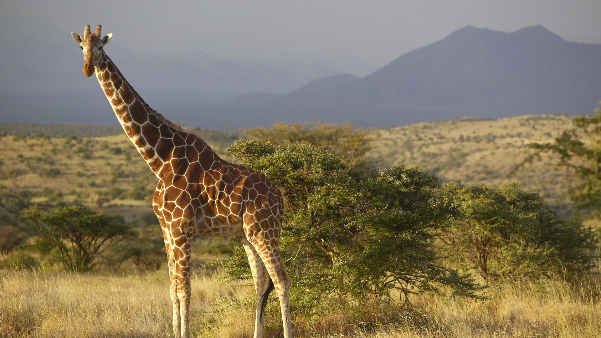
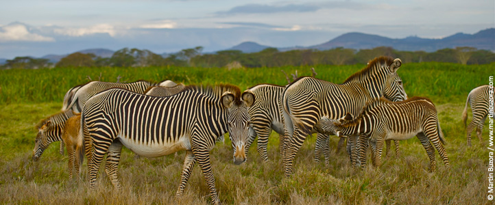
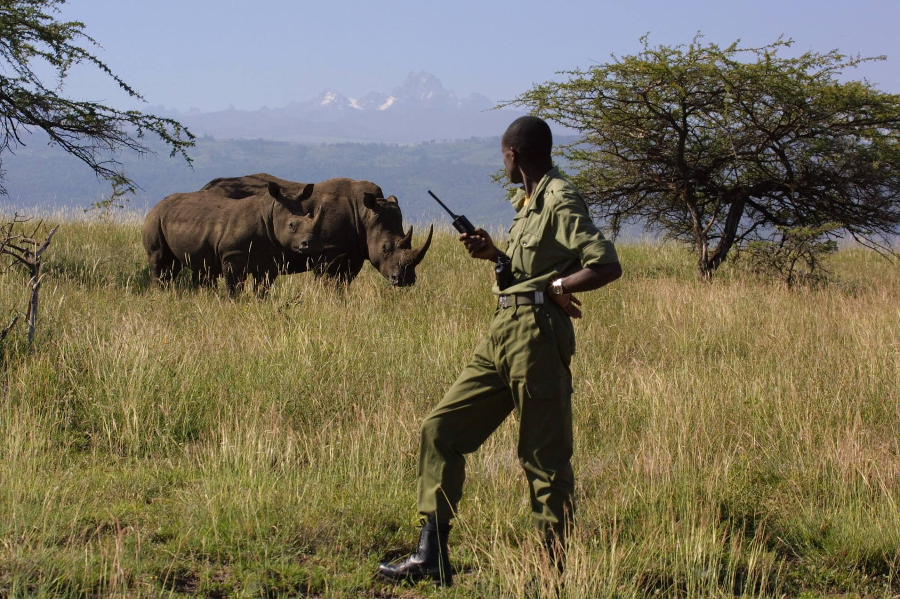
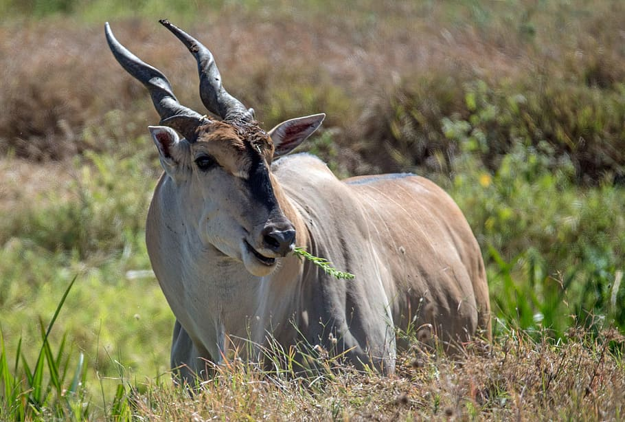

What to do in Lewa?
The reason to traveling to Lewa would be to tour and stay at the wildlife conservancy. There are many housing options being that the conservancy is made up of 65,000 acres of land. Apart from seeing majestic creatures right outside your home, you can sign up for guided tours throughout the area to see all of the wildlife the conservancy houses. Some of the wildlife includes, rhinos, elephants, zebras and leopards. If you would like to discover more to do while visiting Lewa, click the image to the left.
Where is Lewa?
Lewa is an area located in the center of Kenya. If you would like to see a more detailed map of Lewa, click the image to the right.
How to get to Lewa?
The best way to get to the Lewa Wildlife Conservancy is to fly from Wilson Airport in Nairobi to Lewa Downs. You can also get to Lewa by road from Nairobi. If you want to learn more about your options of travel to Lewa, click the image to the left.





Want to see more images of Lewa? Click the image to the right!